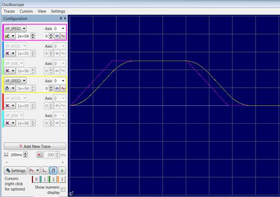

Axis Parameter
VP_MODE AXIS(n) = value
Writing to this parameter allows the selection of a velocity profiling mode most suitable for your application. VP_MODE = 0 is the default setting for all Motion Coordinators.
All velocity profiling modes allow the SPEED/ACCEL/DECEL (and JERK for modes 5 and 6) motion parameters to be changed while profiling non-SP move types.
Velocity profiling modes 5 and 6 allow the SPEED/ACCEL/DECEL/JERK motion parameters to be changed while profiling SP move types. When an SP move becomes active, the motion parameters it was loaded with overwrite the axis parameters. Note that when a move that has had its motion parameters changed completes, the next move will use the motion parameters it was loaded with, so any changes may need to be reapplied for successive moves.
|
Trapezoidal multi-axis interpolation (default) |
|
|
Jerk limited multi-axis interpolation |
|
|
Jerk limited multi-axis interpolation |
For Motion PLC using firmware version 2.0342 and later, the default VP_MODE is 6.
Applies ACCEL and DECEL to give a trapezoidal velocity profile. The S profile in this mode is made by digitally filtering the velocity profile over a defined time (in milliseconds) set using the SRAMP command.
Advantages:
Disadvantages:
UNITS = 1000
SPEED = 50000
ACCEL = 140000
DECEL = 140000
SRAMP = 200
DEFPOS(0)
VP_MODE = 0
TRIGGER
MOVE(50000)

This Motion Perfect Oscilloscope trace shows the effect of SRAMP=200.
Applies a fixed JERK setting. As jerk is the derivative of acceleration, its units are /sec/sec/sec.
Advantages:
Disadvantages:
• Computationally intensive
Describe a square with rounded corners, moving at speed through each segment of the shape.
LIMIT_BUFFERED = 4
BASE(1, 2) 'Set base array
SPEED = 300 'mm/s
ACCEL = 6000 'mm/s^2
DECEL = ACCEL
FORCE_SPEED = SPEED
ENDMOVE_SPEED = SPEED
CORNER_MODE.3 = ON 'Slow on arc radius
FULL_SP_RADIUS = 10.0
VP_MODE = 5
JERK = 500000 'mm/s^3
MERGE = ON 'Don't stop between each move
MOVEABSSP(0, 5.0)
WAIT IDLE
TRIGGER
WA(100)
MOVESP(0, 100.0)
MOVECIRCSP(5.0, 5.0, 5.0, 0, 1)
MOVESP(100.0, 0)
MOVECIRCSP(5.0, -5.0, 0, -5.0, 1)
MOVESP(0, -100.0)
MOVECIRCSP(-5.0, -5.0, -5.0, 0, 1)
MOVESP(-100.0, 0)
MOVECIRCSP(-5.0, 5.0, 0, 5.0, 1)
WAIT IDLE
This mode uses uniform jerk and combines the capabilities of modes 0 and 5 to allow it to be used for all motion applications.
When replacing mode 0, the application will need to either use a very high JERK value to create trapezoidal motion, or if SRAMP is being used, select a value of JERK that gives a comparable rate of change of acceleration.
Using SRAMP with VP_MODE = 6 is available with firmware version 2.0342 and later, though using JERK is recommended.
When replacing mode 5, the application may need no changes beyond setting the VP_MODE to 6, though the setting of specific bits in VP_OPTIONS may be necessary when a specific mode 5 behaviour is required.
Advantages:
Disadvantages:
• Computationally expensive (more so than VP_MODE = 5)
JERK , SRAMP , VP_DEMAND_ACCEL , VP_DEMAND_DECEL , VP_DEMAND_JERK , VP_DEMAND_SPEED , VP_JERK , VP_ACCEL , VP_OPTIONS , VP_POSITION